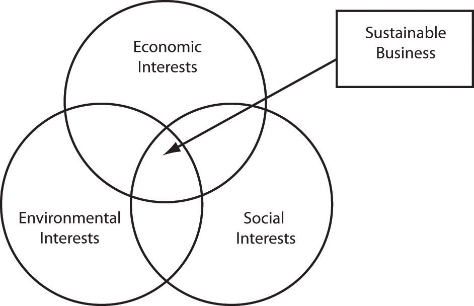

Recall from Chapter 1 "Introduction" that a sustainable business is one that is concerned about the social, environmental, and economic impacts associated with its current and future operations and the ability of the business to meet present needs while ensuring its and others’ long-term survival. Ideally, the sustainable business seeks to have a positive social impact, environmental impact, and economic impact. Taken together, a business’s contribution to social justice, environmental quality, and economic prosperity is collectively referred to as the triple bottom line.Elkington (1997). The triple bottom lineOrganizational success defined by three aspects: social, environmental, and economic factors, often referred to as people, planet, and profit. (social, environmental, economic) is sometimes referred to as people, planet, profit.
Once considered the purview of governments and nonprofit organizations (such as Heifer International, a global leader in developing sustainable communities), businesses are increasingly being called upon to address social, environmental, and economic issues. Rethinking the business in terms of its triple bottom line impact and performance (social, environmental, and economic) is critical in establishing the foundation for sustainable business. This requires a shift away from thinking of a business only in terms of its financial profit to shareholders. While financial profit is necessary for survival, the sustainable business applies a broader view of the business, its responsibilities, and its performance. Therefore, the sustainability of business is discussed in terms of three interrelated and interconnected dimensions: social, environment, and economic.
Figure 2.1 Sustainable Business
